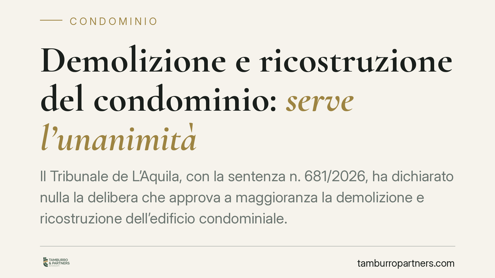

Demolizione e ricostruzione del condominio: serve l'unanimità
Il Tribunale de L'Aquila, con la sentenza n. 681/2026, ha dichiarato nulla la delibera che approva a maggioranza la demolizione e ricostruzione dell'edificio condominiale. Per un intervento così radicale sulla proprietà comune non basta il voto della maggioranza: occorre il consenso di tutti i condomini. Una decisione che tocca il cuore dei poteri dell'assemblea e i limiti a tutela del singolo proprietario.

Il caso
Un'assemblea condominiale aveva deliberato, a maggioranza, di demolire l'intero edificio e ricostruirlo. Un condomino contrario ha impugnato la decisione. Il Tribunale de L'Aquila (sentenza n. 681/2026) gli ha dato ragione: la delibera è nulla per difetto assoluto di attribuzioni, cioè perché l'assemblea ha deciso su una materia che esce dai suoi poteri.
La distinzione non è di dettaglio. Una delibera *annullabile* va impugnata entro trenta giorni, poi si consolida. Una delibera *nulla* è invece priva di effetti fin dall'origine e può essere fatta valere in ogni tempo, anche da chi non l'ha impugnata subito.
Inquadramento normativo
L'assemblea condominiale ha competenza sull'ordinaria e straordinaria amministrazione delle parti comuni, secondo le maggioranze previste dagli artt. 1120 e 1136 del Codice civile, come modificati dalla L. 220/2012 (riforma del condominio). Anche le innovazioni più impegnative restano nel perimetro di interventi che *conservano* o *migliorano* la cosa comune.
La demolizione e ricostruzione dell'intero fabbricato è cosa diversa. Non è un'innovazione né una manutenzione: incide sul diritto di proprietà di ciascun condomino sulla propria unità immobiliare, che con la demolizione cessa materialmente di esistere. Per questo la decisione esula dalle attribuzioni assembleari e richiede il consenso unanime di tutti i proprietari.
Il principio ha un'eccezione rilevante: quando la ricostruzione è necessaria a seguito di eventi che hanno reso l'edificio inagibile o pericolante, come i danni sismici. In quel caso non si tratta di una scelta discrezionale, ma di un obbligo conservativo, e la disciplina applicabile è differente. Il contesto aquilano, non a caso, rende il tema tutt'altro che teorico.
Implicazioni pratiche
Per il singolo condomino la sentenza è una garanzia: nessuna maggioranza, per quanto ampia, può decidere di abbattere il palazzo in cui si trova la sua abitazione senza il suo consenso. Il diritto di proprietà sull'unità immobiliare non è disponibile a colpi di votazione.
Per l'amministratore e per la maggioranza il messaggio è altrettanto chiaro: portare in assemblea una proposta di demolizione e ricostruzione confidando nel voto maggioritario è inutile e rischioso. La delibera, se approvata, sarà nulla e potrà essere contestata anche a distanza di tempo, con l'aggravante di aver magari già avviato spese o affidato incarichi.
Diversa la situazione dell'edificio danneggiato da eventi sismici o strutturalmente compromesso. Qui la ricostruzione può diventare un dovere di conservazione, con regole di deliberazione proprie. È essenziale, però, documentare con perizie tecniche la natura *necessaria* dell'intervento: è questo il presupposto che sposta il caso fuori dalla regola dell'unanimità.
Cosa fare in concreto
- Verificate l'oggetto della delibera prima di votare. Se si parla di demolizione e ricostruzione integrale, accertate se esiste il consenso di tutti i proprietari o un obbligo conservativo documentato.
- Acquisite le perizie. In presenza di danni strutturali o sismici, fate redigere una relazione tecnica che qualifichi l'intervento come necessario: è il documento che regge l'eventuale deliberazione a maggioranza.
- Non impugnate a caso. Distinguere tra nullità e annullabilità cambia i termini e la strategia. Consigliamo di far valutare la delibera prima di scegliere lo strumento.
- Formalizzate il dissenso a verbale. Se siete contrari, mettete a verbale la vostra posizione: agevola le successive contestazioni e chiarisce le responsabilità.
- Fate esaminare il regolamento condominiale. Alcuni regolamenti contengono clausole che disciplinano interventi straordinari: vanno lette insieme alla normativa.
La pronuncia del Tribunale de L'Aquila conferma un equilibrio: l'assemblea governa la gestione delle parti comuni, ma non può disporre della proprietà individuale. Chi intende promuovere o contrastare un intervento di questa portata deve muoversi sul presupposto giuridico corretto fin dall'inizio.
Disclaimer
Contributo informativo a cura di Tamburro & Partners - Avv. Giuseppe Tamburro. Non costituisce parere legale.
Ogni condominio ha una storia a sé.
Se gestisci un'amministrazione e vuoi un confronto su una specifica questione condominiale, scrivi allo studio. Ti rispondiamo entro un giorno lavorativo.